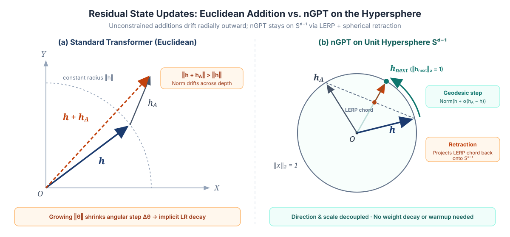

在梳理大模型中各类 $Q$、$K$ 归一化（Normalization）方法之前，先交代一下这个几何问题的理论背景。看似只是代码里简单的 RMSNorm 或 L2 归一化，从几何角度看，它正好连起了 Softmax Attention 与 Linear Attention 在设计目标上的核心差异。
从 Softmax Attention 到线性 RNN
过去一年里，苏神连续写了两篇推导笔记，试图在数学上打通 Softmax Attention 与 Linear Attention / Test-Time Training（TTT）之间的桥梁。
第一条线索来自《将Softmax Attention线性化为Gated DeltaNet》[1]。文章先把原始 Softmax Attention 改写成精确的平方复杂度 RNN 递归形式，再借助 Softmax 的一阶泰勒展开 $\alpha_{t,i} \approx \frac{1}{t}\big(1 + \boldsymbol{q}\cdot(\boldsymbol{k}_i - \bar{\boldsymbol{k}}_t)\big)$ 尝试把 Query 向量 $\boldsymbol{q}$ 从状态递归中拆离。为了用极大极小策略平衡截断误差，需要寻找令 $\alpha_{t,t}(\boldsymbol{q})$ 最大的 $\boldsymbol{q}^*$——但如果没有模长约束，点积可以无限大，根本不存在有限最大值；作者不得不先假设 $\boldsymbol{q}, \boldsymbol{k}$ 模长相当，取 $\boldsymbol{q}^* = \boldsymbol{k}_t - \bar{\boldsymbol{k}}_t$，这才顺理成章地推出 Gated DeltaNet（GDN）。就在这里，$\boldsymbol{q}, \boldsymbol{k}$ 的模长几何约束已经埋下了伏笔。
第二条线索来自姊妹篇《平均之路：从Attention到TTT》[2]。它换了一个非常干净的“三步平均”视角，直接从标准 Softmax Attention 出发，演示完整的 KV Cache 是如何被一步步消去的：
$$\boldsymbol{o} = \sum_{i=1}^n a_i \boldsymbol{v}_i, \qquad a_i = \frac{e^{\boldsymbol{q}\cdot \boldsymbol{k}_i}}{\sum_{j=1}^n e^{\boldsymbol{q}\cdot \boldsymbol{k}_j}} \tag{1}$$把式 (1) 彻底线性化为无需 KV Cache 的 RNN，整套变换可以浓缩为三步：
- 第一步：在线回归消去 $V$（省掉 V Cache）。把每个硬配对的 Value 向量 $\boldsymbol{v}_i$ 推广为条件分布期望 $\mathbb{E}_{p(\boldsymbol{v}\mid \boldsymbol{k}_i)}[\boldsymbol{v}]$，并用参数为 $\boldsymbol{W}$ 的均值预测模型 $\boldsymbol{\mu}_{\boldsymbol{W}}(\boldsymbol{k}_i)$ 在数据流 $(\boldsymbol{k}_i, \boldsymbol{v}_i)$ 上做在线回归来拟合 $\boldsymbol{v}_i$。用 $\boldsymbol{\mu}_{\boldsymbol{W}}(\boldsymbol{k}_i)$ 替代 $\boldsymbol{v}_i$ 后，式 (1) 变为： $$\boldsymbol{o} = \sum_{i=1}^n a_i \boldsymbol{\mu}_{\boldsymbol{W}}(\boldsymbol{k}_i) \tag{2}$$
- 第二步：一次平均场近似（把非线性提到外面）。式 (2) 里虽然没了 $V$，但 $K$ 还在，复杂度依然是平方级。借用统计物理中的平均场近似，把“函数的加权平均”近似为“加权平均的函数”： $$\boldsymbol{o} = \sum_{i=1}^n a_i \boldsymbol{\mu}_{\boldsymbol{W}}(\boldsymbol{k}_i) \approx \boldsymbol{\mu}_{\boldsymbol{W}}\!\left(\sum_{i=1}^n a_i \boldsymbol{k}_i\right) \tag{3}$$ 当 $\boldsymbol{\mu}_{\boldsymbol{W}}$ 取简单线性模型（如 $\boldsymbol{W}\boldsymbol{k}_i$）时，式 (3) 甚至是精确成立的恒等式。至此，括号内剩下的核心计算退化成一个 $K=V$ 的 Softmax Attention：$\sum_{i=1}^n a_i \boldsymbol{k}_i$。
- 第三步：各向同性近似消去 $K$（彻底变为线性 RNN）。由于 $a_i \propto e^{\boldsymbol{q}\cdot \boldsymbol{k}_i}$，如果 $\boldsymbol{k}_1, \dots, \boldsymbol{k}_n$ 在空间中足够各向同性——更准确地说，它们垂直于 $\boldsymbol{q}$ 的分量加权平均近似为零——那么就有： $$\sum_{i=1}^n a_i \boldsymbol{k}_i \approx \lambda \boldsymbol{q} \implies \boldsymbol{o} \approx \boldsymbol{\mu}_{\boldsymbol{W}}(\boldsymbol{q}) \tag{4}$$ 标量 $\lambda$ 可以直接吸收到 $\boldsymbol{q}$ 中。这一步把括号里的求和直接换成当前 Query $\boldsymbol{q}$，不再翻查历史 $K$ 和 $V$，所有历史记忆全压进状态参数 $\boldsymbol{W}$——这就是标准的线性复杂度 RNN，例如 TTT[3]（若 $\boldsymbol{\mu}_{\boldsymbol{W}}$ 取线性并用一步梯度下降更新，就是 DeltaNet）。

不过，推导到这里需要面对一个明显的反例：式 (4) 中“$K=V$ 的 Attention 近似等于 $\lambda \boldsymbol{q}$”在真实模型里并不总是成立。最有代表性的例子就是 MLA 和 DeepSeek-V4（DSV4）——它们经推理矩阵吸收后本质上都是 $K=V$ 的 MQA，核心计算正好是 $\sum_{i=1}^n a_i \boldsymbol{k}_i$。如果结果真的退化成 $\lambda \boldsymbol{q}$，每个 token 的输出就只依赖自身，token 间的交互也就不存在了。
由此可以看到，式 (4) 在真实模型里并非天然成立，却直接决定了线性化近似的误差边界。顺着这条线索再看近几年围绕 $\boldsymbol{q}, \boldsymbol{k}$ 的归一化工作——从 QK-Norm、QK-Clip、QK-Normed MLA 到 nGPT，再到 DeltaNet 和 Gated DeltaNet 中的 L2 Norm——可以清楚地看出 Softmax Attention 与 Linear Attention 对 Key/Query 几何分布的要求是如何一步步分化的。
各向同性假设与真实表征分布
回到式 (4)，先看 $\sum_{i=1}^n a_i \boldsymbol{k}_i \approx \lambda \boldsymbol{q}$ 到底在什么几何条件下才能成立。将每个历史 Key $\boldsymbol{k}_i$ 沿着当前 Query $\boldsymbol{q}$ 的方向做正交分解：
$$\boldsymbol{k}_i = \boldsymbol{k}_i^{\parallel} + \boldsymbol{k}_i^{\perp}, \qquad \boldsymbol{k}_i^{\parallel} = \frac{\boldsymbol{q} \cdot \boldsymbol{k}_i}{\|\boldsymbol{q}\|_2^2}\,\boldsymbol{q}, \qquad \boldsymbol{q} \cdot \boldsymbol{k}_i^{\perp} = 0 \tag{5}$$由于注意力权重 $a_i \propto e^{\boldsymbol{q}\cdot \boldsymbol{k}_i} = e^{\boldsymbol{q}\cdot \boldsymbol{k}_i^{\parallel}}$ 只依赖于平行分量，Softmax 对垂直分量 $\boldsymbol{k}_i^{\perp}$ 是完全“盲”的。因此式 (4) 成立需要同时满足两个几何条件：
- 方向均匀（各向同性）：在垂直于 $\boldsymbol{q}$ 的超平面内，各个 $\boldsymbol{k}_i^{\perp}$ 均匀指向四面八方，加权平均后正负相互抵消，即 $\sum_{i=1}^n a_i \boldsymbol{k}_i^{\perp} \approx \mathbf{0}$。
- 模长受控：$\boldsymbol{k}_i$ 不出现极端的长度离群值，不至于让个别向量主导掉整体平均。
如果把所有 $\boldsymbol{q}, \boldsymbol{k}_i$ 都约束到单位超球面 $\mathbb{S}^{d-1}$ 上（即 $\|\boldsymbol{q}\|_2 = \|\boldsymbol{k}_i\|_2 = 1$），注意力分布 $a_i \propto e^{\tau \boldsymbol{q}^\top \boldsymbol{k}_i}$ 对应的正是球面统计学中的 von Mises–Fisher（vMF）分布。在均匀测度的连续球面上，vMF 分布的期望向量严格平行于均值方向 $\boldsymbol{q}$——这就是式 (4) 最干净的数学原型。
不过，真实训练出来的 Transformer 离这种理想球面相去甚远。表征分析普遍观察到两类破坏几何对称性的现象：
- 各向异性（Anisotropy）[4]：高维空间中的 Key 并不会铺满整个超球面，而是集中在极窄的圆锥里，存在明显的非零公共均值 $\bar{\boldsymbol{k}} \neq \mathbf{0}$。垂直分量无法抵消，加权平均会被持续拉向圆锥轴心。
- Attention Sink 与 Massive Activations[5][6]：Softmax 要求所有权重之和严格为 1，当某个注意力头在当前步不需要读取历史信息（想执行近似“空操作”）时，必须找一个位置承接多余的概率质量。因果掩码下，最开头的 token（如
<bos>）对所有后续位置都可见，于是模型把开头 token 的 Key 训出极大模长离群值，同时把对应的 Value 压向零。

一旦缺少模长约束，点积注意力就不再只反映方向相似度，而容易被少数大模长向量主导。因此，工程实践中最先落地的一步，就是显式限制 Query 和 Key 的模长。
QK-Norm 与 MLA 的兼容性问题
最初给 $Q$、$K$ 加归一化的动机很直接：防止大规模预训练中的 Loss Spike。由柯西-施瓦茨不等式，缩放点积注意力的 pre-softmax logits 满足：
$$\left|\frac{\boldsymbol{q}^\top \boldsymbol{k}}{\sqrt{d_h}}\right| \le \frac{\|\boldsymbol{q}\|_2 \|\boldsymbol{k}\|_2}{\sqrt{d_h}} \tag{6}$$随着训练步数推进和学习率拉高，残差流与投影权重 $\boldsymbol{W}_Q, \boldsymbol{W}_K$ 的模长很容易持续漂移增长。一旦 $\|\boldsymbol{q}\|_2 \|\boldsymbol{k}\|_2$ 过大，注意力 logits 会快速放大，Softmax 饱和成近似 one-hot 分布——即熵坍缩（Entropy Collapse）——继而导致梯度消失和训练发散。
激活层归一化：QK-Norm
最直接的做法，是在计算点积前沿着每个注意力头的特征维度对 $\boldsymbol{q}, \boldsymbol{k}$ 施加归一化。从 Henry 等人[7] 提出基于 L2 Norm 的 Cosine Attention，到 ViT-22B[8] 验证 LayerNorm 版 QK-Norm 在百亿视觉模型上的稳定性，再到 Gemma 3[9]、OLMo 2[10]、Qwen3[11] 等现代开源大语言模型普遍采用的 RMSNorm 版 QK-Norm，其形式非常简洁：
$$\hat{\boldsymbol{q}} = \frac{\boldsymbol{q}}{\sqrt{\frac{1}{d_h}\|\boldsymbol{q}\|_2^2 + \epsilon}} \odot \boldsymbol{\gamma}_q, \qquad \hat{\boldsymbol{k}} = \frac{\boldsymbol{k}}{\sqrt{\frac{1}{d_h}\|\boldsymbol{k}\|_2^2 + \epsilon}} \odot \boldsymbol{\gamma}_k \tag{7}$$从几何上看，式 (7) 将无约束欧氏空间中的 $\boldsymbol{q}, \boldsymbol{k}$ 映射到一个半径由可学习参数 $\boldsymbol{\gamma}_q, \boldsymbol{\gamma}_k$ 控制的椭球面上，直接阻断残差流模长增长向注意力 logits 的传导。
MHA、GQA、MQA 与 MLA 定义对照
这种直接作用在激活值上的做法在常规注意力中很有效，但应用到 MLA（Multi-Head Latent Attention） 时会遇到结构性冲突。为了把冲突的代数原因讲清楚——同时也呼应第一章中 MLA 在推理期退化为 $K=V$ 注意力的机制——我们先把 MHA、GQA、MQA 与 MLA 放在同一套列向量记号下对照。设第 $t$ 个 token 的隐状态为 $\boldsymbol{h}_t \in \mathbb{R}^d$，Query 头数为 $n_h$，单头维度为 $d_h$：
- MHA（Multi-Head Attention）[12]：每个头 $m \in \{1,\dots,n_h\}$ 拥有独立的投影矩阵 $\boldsymbol{W}_Q^{(m)}, \boldsymbol{W}_K^{(m)}, \boldsymbol{W}_V^{(m)} \in \mathbb{R}^{d_h \times d}$： $$\boldsymbol{q}_t^{(m)} = \boldsymbol{W}_Q^{(m)} \boldsymbol{h}_t, \qquad \boldsymbol{k}_t^{(m)} = \boldsymbol{W}_K^{(m)} \boldsymbol{h}_t, \qquad \boldsymbol{v}_t^{(m)} = \boldsymbol{W}_V^{(m)} \boldsymbol{h}_t \tag{8}$$ 每层每个 token 需要缓存 $2 n_h d_h$ 个标量，长上下文解码很容易卡在 KV Cache 访存带宽上。
- GQA（Grouped-Query Attention）与 MQA（Multi-Query Attention）[13][14]：将 $n_h$ 个 Query 头划分为 $n_{kv}$ 组（$1 \le n_{kv} \le n_h$，组索引 $g(m) = \lceil m \cdot n_{kv} / n_h \rceil$），同组内的 Query 头共享同一套 Key 和 Value 投影： $$\boldsymbol{q}_t^{(m)} = \boldsymbol{W}_Q^{(m)} \boldsymbol{h}_t, \qquad \boldsymbol{k}_t^{(g)} = \boldsymbol{W}_K^{(g)} \boldsymbol{h}_t, \qquad \boldsymbol{v}_t^{(g)} = \boldsymbol{W}_V^{(g)} \boldsymbol{h}_t \tag{9}$$ 取 $n_{kv} = n_h$ 退化回 MHA，取 $n_{kv} = 1$ 即为 MQA。每层单 token 的 KV Cache 降为 $2 n_{kv} d_h$；由于缓存的仍是显式的分组 Key 向量，标准 QK-Norm 可以直接套用。
- MLA（Multi-Head Latent Attention）[15]：不直接削减 KV 头数，而是把 $\boldsymbol{h}_t$ 联合压缩进一个低秩潜向量 $\boldsymbol{c}_t^{KV} \in \mathbb{R}^{d_c}$（$d_c \ll n_h d_h$），再搭配一个所有头共享的小维度解耦 RoPE Key $\boldsymbol{k}_t^R \in \mathbb{R}^{d_R}$： $$\begin{aligned} \boldsymbol{c}_t^{KV} &= \boldsymbol{W}_{DKV} \boldsymbol{h}_t, & \boldsymbol{k}_t^{C,(m)} &= \boldsymbol{W}_{UK}^{(m)} \boldsymbol{c}_t^{KV}, & \boldsymbol{v}_t^{C,(m)} &= \boldsymbol{W}_{UV}^{(m)} \boldsymbol{c}_t^{KV} \\ \boldsymbol{k}_t^R &= \operatorname{RoPE}(\boldsymbol{W}_{KR} \boldsymbol{h}_t), & \boldsymbol{k}_t^{(m)} &= \big[\boldsymbol{k}_t^{C,(m)};\, \boldsymbol{k}_t^R\big], & \boldsymbol{q}_t^{(m)} &= \big[\boldsymbol{q}_t^{C,(m)};\, \boldsymbol{q}_t^{R,(m)}\big] \end{aligned} \tag{10}$$ 推理解码时，利用矩阵结合律把升维矩阵 $\boldsymbol{W}_{UK}^{(m)}$ 吸收进 Query 侧，把 $\boldsymbol{W}_{UV}^{(m)}$ 吸收进输出投影 $\boldsymbol{W}_O^{(m)}$。KV Cache 每层单 token 只需存 $(\boldsymbol{c}_t^{KV}, \boldsymbol{k}_t^R)$ 共 $d_c + d_R$ 个标量，同时内容分支直接把 $\boldsymbol{c}_t^{KV}$ 既当 Key 又当 Value——这正是图 1 中提到的 $K=V$ MQA 核心结构。
| 注意力结构 | 每层单 Token KV Cache | 推理期矩阵吸收 | 常规投影后 QK-Norm 兼容性 |
|---|---|---|---|
| MHA | $2 n_h d_h$ | 无需吸收 | 逐头直接兼容 |
| GQA | $2 n_{kv} d_h$ | 无需吸收 | 逐组直接兼容 |
| MQA | $2 d_h$ | 无需吸收 | 共享 Key 直接兼容 |
| MLA | $d_c + d_R$ | 吸收 $\boldsymbol{W}_{UK}^{(m)}, \boldsymbol{W}_{UV}^{(m)}$ | 直接套用会破坏结合律，需拆解或改到优化器层 |
MLA 的两种方案：QK-Clip 与 QK-Normed MLA
聚焦 MLA 的内容分支点积（暂略 RoPE 部分和头标号，记 $\boldsymbol{k}_t^C = \boldsymbol{W}_K \boldsymbol{c}_t$）。矩阵吸收依赖于乘法结合律：
$$\boldsymbol{q}_i^\top (\boldsymbol{W}_K \boldsymbol{c}_t) = \big(\boldsymbol{W}_K^\top \boldsymbol{q}_i\big)^\top \boldsymbol{c}_t \tag{11}$$如果直接在 $\boldsymbol{k}_t^C = \boldsymbol{W}_K \boldsymbol{c}_t$ 外面包一层非线性的 QK-Norm，式 (11) 的结合律就会被破坏——为了算分母里的 RMS，推理时必须先把 $\boldsymbol{c}_t$ 显式展开成完整的 Key，MLA 省显存的优势随之丧失。围绕这一矛盾，目前主要有两条解决思路：
- 路径一：将约束移到优化器层——QK-Clip / MuonClip（Kimi K2）[16]。使用 Muon 优化器预训练万亿参数 MoE 模型 Kimi K2 时，团队发现 Muon 容易同步推高 $\boldsymbol{W}_Q$ 和 $\boldsymbol{W}_K$ 的谱范数，导致注意力 logits 持续放大。既然前向激活里不便插入 Norm，就在每次参数更新后监控各头的最大注意力分数 $S_{\max}$；一旦超过阈值 $\tau$，直接按比例联合缩放该头对应的投影权重： $$\boldsymbol{W}_Q \leftarrow \sqrt{\frac{\tau}{S_{\max}}}\,\boldsymbol{W}_Q, \qquad \boldsymbol{W}_K \leftarrow \sqrt{\frac{\tau}{S_{\max}}}\,\boldsymbol{W}_K \tag{12}$$ （在 MLA 的解耦 RoPE 分支上，只缩放各头的 Query 投影而不改动共享的 $\boldsymbol{W}_{KR}$。）因为完全不动前向计算图，QK-Clip 完整保留了 MLA 的推理吸收，使 Kimi K2 在 15.5T token 的预训练过程中保持稳定，未出现 Loss Spike。
- 路径二：把 RMSNorm 拆解吸收——QK-Normed MLA[17]。把式 (7) 中的 RMSNorm 拆开看，它并不是不可分割的黑盒，而是由静态特征权重 $\boldsymbol{\gamma}_k$ 和动态标量统计量 $S(\boldsymbol{k}_t^C) = \sqrt{\frac{1}{d_h}\|\boldsymbol{k}_t^C\|_2^2 + \epsilon}$ 两部分组成。代入 MLA 内容分支点积，结果可以直接因式分解： $$\boldsymbol{q}_i^\top \!\left(\frac{(\boldsymbol{W}_K \boldsymbol{c}_t) \odot \boldsymbol{\gamma}_k}{S(\boldsymbol{k}_t^C)}\right) = \underbrace{\Big(\boldsymbol{W}_K^\top (\boldsymbol{q}_i \odot \boldsymbol{\gamma}_k)\Big)^\top}_{\tilde{\boldsymbol{q}}_i^\top} \boldsymbol{c}_t \cdot \underbrace{\frac{1}{S(\boldsymbol{k}_t^C)}}_{\alpha_t} \tag{13}$$ 静态向量 $\boldsymbol{\gamma}_k$ 依然可以无障碍地吸收到 Query 端 $\tilde{\boldsymbol{q}}_i$ 中；动态部分则从整条 Key 向量压缩为单个逆 RMS 标量 $\alpha_t = 1 / S(\boldsymbol{k}_t^C)$，每个 token 每组只需在 KV Cache 里额外多存 1 个标量。相比缓存完整 Key，多存标量的显存开销几乎可以忽略（256K 上下文下延迟开销低于 2%），在精确算术意义下为 MLA 恢复了显式 QK RMSNorm。
nGPT：全网络超球面归一化
既然约束 $Q$、$K$ 的范数既能稳定训练，又有利于采用更大学习率、加快收敛，一个自然的延伸问题是：如果把整个 Transformer 的权重和隐状态都约束到单位超球面 $\mathbb{S}^{d-1}$ 上，会发生什么？
这就是 NVIDIA 在 nGPT（Normalized Transformer）[18] 中迈出的一步。标准 Transformer 的残差连接 $\boldsymbol{h} \leftarrow \boldsymbol{h} + \boldsymbol{h}_A$ 是在无约束欧氏空间里做加法；而在 nGPT 中，输入输出 Embedding、所有线性层沿嵌入维度的权重，以及每一层的隐状态 $\boldsymbol{h}$ 和 Attention / MLP 模块输出 $\boldsymbol{h}_A, \boldsymbol{h}_M$，全部被约束到单位超球面上。
在球面上不能直接相加两个单位向量，而应沿着球面两点间的最短路径——测地线（Geodesic）——移动。球面线性插值（SLERP）给出了精确的测地线公式：
$$\operatorname{SLERP}(\boldsymbol{h}, \boldsymbol{h}_A; \alpha) = \frac{\sin((1-\alpha)\theta)}{\sin\theta}\,\boldsymbol{h} + \frac{\sin(\alpha\theta)}{\sin\theta}\,\boldsymbol{h}_A, \qquad \theta = \arccos(\boldsymbol{h}^\top \boldsymbol{h}_A) \tag{14}$$为了计算高效，nGPT 用一阶线性插值（LERP）叠加一次球面投影（Retraction）近似测地线更新：
$$\boldsymbol{h} \leftarrow \operatorname{Norm}\!\Big(\boldsymbol{h} + \boldsymbol{\alpha}_A \odot (\boldsymbol{h}_A - \boldsymbol{h})\Big), \qquad \boldsymbol{h} \leftarrow \operatorname{Norm}\!\Big(\boldsymbol{h} + \boldsymbol{\alpha}_M \odot (\boldsymbol{h}_M - \boldsymbol{h})\Big) \tag{15}$$其中 $\boldsymbol{\alpha}_A, \boldsymbol{\alpha}_M \in \mathbb{R}_{\ge 0}^d$ 是可学习的逐通道步长（作者称为特征学习率 / eigen learning rates），控制隐状态在球面上朝目标点 $\boldsymbol{h}_A$ 或 $\boldsymbol{h}_M$ 移动的步幅。


nGPT 能在不同序列长度下把收敛步数压缩 4–20 倍，背后对应着两点直观的优化几何：
- 消除隐式角度学习率衰减：在无约束欧氏空间中，当参数模长 $\|\boldsymbol{\theta}\|_2$ 随训练变大时，Adam 给出的同等幅值更新所引起的方向转角 $\Delta\theta \propto \|\Delta\boldsymbol{\theta}\|_2 / \|\boldsymbol{\theta}\|_2$ 会越来越小，相当于隐式衰减了有效学习率。
- 彻底解耦语义方向与温度尺度：把向量和权重都锁在单位球面上后，点积 $\boldsymbol{q}^\top \boldsymbol{k}$ 严格落在 $[-1, 1]$ 内。原本用来压制方差膨胀的 $1/\sqrt{d_h}$ 反而要配合 $\sqrt{d_h}$ 量级的可学习缩放因子来恢复分布尖锐度，Weight Decay 与 Warmup 也可以一并去掉。
从 QK-Norm 到 nGPT，Softmax 体系下的思路一脉相承：通过范数约束去掉冗余的径向自由度，让参数更新主要作用于携带语义信息的角度方向。
Linear Attention 中的 L2 Norm 与 Householder 算子
现在把视角切回第一章的落脚点——Linear Attention 与现代 RNN。如果说在 Softmax Attention 中，给 $Q$、$K$ 加 Norm 主要用于稳定训练，那么在以 DeltaNet、Gated DeltaNet（GDN）、Kimi Delta Attention（KDA） 为代表的现代线性注意力架构里，对 Key 做严格的 L2 归一化（$\|\boldsymbol{k}_t\|_2 = 1$） 则是保证递推数值稳定的必要条件。
Delta 更新算子的特征谱
最早的 Linear Attention[19] 采用纯累加更新 $\boldsymbol{S}_t = \boldsymbol{S}_{t-1} + \boldsymbol{k}_t \boldsymbol{v}_t^\top$，写进固定大小状态矩阵 $\boldsymbol{S}_t \in \mathbb{R}^{d_k \times d_v}$ 的旧记忆无法覆写，长序列下很快互相混叠。为了支持对已有记忆的选择性覆写，DeltaNet[20][21] 引入了基于在线梯度下降的 Delta Rule 纠错更新：
$$\boldsymbol{S}_t = \boldsymbol{S}_{t-1} + \beta_t \boldsymbol{k}_t \Big(\boldsymbol{v}_t^\top - \boldsymbol{k}_t^\top \boldsymbol{S}_{t-1}\Big) = \big(\boldsymbol{I} - \beta_t \boldsymbol{k}_t \boldsymbol{k}_t^\top\big) \boldsymbol{S}_{t-1} + \beta_t \boldsymbol{k}_t \boldsymbol{v}_t^\top \tag{16}$$随后的 Gated DeltaNet[22] 和 Kimi Delta Attention（KDA）[23] 在此基础上叠加上遗忘门衰减矩阵 $\boldsymbol{D}_t$（GDN 为标量衰减 $d_t \boldsymbol{I}$，KDA 细化为逐通道对角衰减 $\operatorname{Diag}(\boldsymbol{d}_t)$）：
$$\boldsymbol{S}_t = \big(\boldsymbol{I} - \beta_t \boldsymbol{k}_t \boldsymbol{k}_t^\top\big) \boldsymbol{D}_t \boldsymbol{S}_{t-1} + \beta_t \boldsymbol{k}_t \boldsymbol{v}_t^\top \tag{17}$$用线性代数拆解核心状态转移算子 $\boldsymbol{M}_t = \boldsymbol{I} - \beta_t \boldsymbol{k}_t \boldsymbol{k}_t^\top$ 的特征谱。任取向量 $\boldsymbol{u} \in \mathbb{R}^{d_k}$，分解到 $\boldsymbol{k}_t$ 方向及其正交补空间 $\boldsymbol{k}_t^\perp$ 上：
$$\boldsymbol{M}_t \boldsymbol{k}_t = \big(1 - \beta_t \|\boldsymbol{k}_t\|_2^2\big)\,\boldsymbol{k}_t, \qquad \boldsymbol{M}_t \boldsymbol{u} = \boldsymbol{u} \quad (\forall\, \boldsymbol{u} \perp \boldsymbol{k}_t) \tag{18}$$可以看到，$\boldsymbol{M}_t$ 有 $d_k - 1$ 个特征值恒为 1，唯一非平凡的特征值是沿着 $\boldsymbol{k}_t$ 方向的 $\lambda = 1 - \beta_t \|\boldsymbol{k}_t\|_2^2$。要在数万步的长序列连乘 $\prod_t \boldsymbol{M}_t$ 中避免状态指数增长，必须把谱半径限制在 $|\lambda| \le 1$ 以内——这也直接给出了 $\|\boldsymbol{k}_t\|_2 = 1$ 的条件。一旦满足单位模长，门控 $\beta_t \in [0, 2]$ 就对应三种清晰的几何变换：
- $\beta_t \in (0, 1)$（部分衰减）：沿 $\boldsymbol{k}_t$ 方向对旧记忆做按比例衰减，正交方向 $\boldsymbol{k}_t^\perp$ 保持原样。
- $\beta_t = 1$（正交投影，$\lambda = 0$）：$\boldsymbol{M}_t = \boldsymbol{I} - \boldsymbol{k}_t \boldsymbol{k}_t^\top$ 成为严格的正交投影矩阵，擦除旧状态在 $\boldsymbol{k}_t$ 方向上的分量，再写入新的 $\boldsymbol{v}_t$。
- $\beta_t = 2$（Householder 反射，$\lambda = -1$）：$\boldsymbol{M}_t = \boldsymbol{I} - 2\boldsymbol{k}_t \boldsymbol{k}_t^\top$ 恰好是经典的 Householder 镜像反射矩阵，把状态向量关于超平面 $\boldsymbol{k}_t^\perp$ 翻转，使转移算子可以取负特征值，从而明显增强 RNN 在奇偶校验与状态追踪等任务上的表达能力。

非正规剪切与状态容量
更进一步，哪怕已经保证 $\|\boldsymbol{k}_t\|_2 = 1$，只要破坏了 $\boldsymbol{I} - \beta_t \boldsymbol{k}_t \boldsymbol{k}_t^\top$ 的对称正交结构，长序列稳定性依然会出问题。Gated DeltaNet-2（GDN-2）[24] 尝试把标量擦除门 $\beta_t$ 细化为逐通道独立的向量门控 $\boldsymbol{b}_t \in (0, 1)^{d_k}$，将转移算子改写为 $\boldsymbol{I} - \boldsymbol{k}_t (\boldsymbol{b}_t \odot \boldsymbol{k}_t)^\top$。
Stable GDN-2[25] 的稳定性分析指出了这一改动在长上下文下发散的根源：由于读出方向 $\boldsymbol{b}_t \odot \boldsymbol{k}_t$ 与写回擦除方向 $\boldsymbol{k}_t$ 不再共线，算子退化为非正规矩阵，混入了非正交的剪切分量（Shear）。即便单步特征值全部落在 $[-1, 1]$ 内，非正规剪切算子的最大奇异值仍可能超过 1——正交方向的信息在保留的同时会向 $\boldsymbol{k}_t$ 方向泄漏增益，哪怕后续不再写入任何新数据，递推状态范数也会随步数指数增长。恢复对称擦除结构后，这种剪切放大才得以消除。
除了算子谱稳定，Key 的几何分布还直接决定了 Linear Attention 的状态容量上限。读出阶段计算 $\boldsymbol{o}_t = \boldsymbol{S}_t^\top \boldsymbol{q}_t$：如果历史写入的 Key $\boldsymbol{k}_1, \dots, \boldsymbol{k}_t$ 在超球面上高度相关（集中在窄圆锥内），不同记忆间的串扰项 $\boldsymbol{k}_i^\top \boldsymbol{k}_j$ 就会偏大，擦除某个 Key 时容易干扰相近的记忆项。唯有当 Key 在超球面上尽量各向同性、接近两两正交时，才能充分利用固定大小矩阵 $\boldsymbol{S}_t \in \mathbb{R}^{d_k \times d_v}$ 的 $d_k$ 个正交存储维度。
对照总结：Softmax 与 Linear 的几何分歧
把上面五类代表性几何归一化方案放进同一张表里横向对照：
| 演进阶段 | 代表工作 | 约束位置 | 核心几何操作 | 主要解决的问题 |
|---|---|---|---|---|
| 激活层 | QK-Norm（ViT-22B, Gemma 3, Qwen3） | $Q, K$ 激活值 | Head-wise RMSNorm / L2 Norm | 限制点积上界，防止 logits 放大与熵坍缩 |
| 优化器 | QK-Clip（Kimi K2 / MuonClip） | 权重 $\boldsymbol{W}_Q, \boldsymbol{W}_K$ | 按 $\sqrt{\tau / S_{\max}}$ 缩放权重 | 在不破坏 MLA 矩阵吸收的前提下压制 logits 增长 |
| 因子吸收 | QK-Normed MLA | 潜空间与标量缓存 | 静态 $\boldsymbol{\gamma}_k$ 吸收 + 缓存逆 RMS 标量 | 以极低缓存代价在 MLA 中恢复精确 QK RMSNorm |
| 全流形 | nGPT | 全网络权重与隐状态 | 约束于 $\mathbb{S}^{d-1}$ + 测地线 LERP/Norm | 解耦方向与尺度，消除隐式学习率衰减，加速收敛 |
| 算子谱 | DeltaNet, Gated DeltaNet, KDA | Linear Attention 的 $\boldsymbol{k}_t$ | 严格 L2 Norm（$\|\boldsymbol{k}_t\|_2 = 1$） | 确保 $\boldsymbol{I} - \beta_t \boldsymbol{k}_t \boldsymbol{k}_t^\top$ 为广义 Householder 算子，保证递推稳定并提升状态容量 |
现在可以回头回答第一章结尾提到的问题：对于 $\sum_{i=1}^n a_i \boldsymbol{k}_i \approx \lambda \boldsymbol{q}$ 这个近似，我们究竟希望它成立，还是不希望它成立？
答案反映出 Softmax Attention 与 Linear Attention 在 Key 几何分布上的不同诉求：
- Linear Attention / DeltaNet 倾向于全局各向同性。由于线性架构将历史信息压缩进固定大小的状态矩阵 $\boldsymbol{S}_t$，单位球面上的 Key 实际上承担着类似正交地址编码（Hash Keys）的作用。Key 分布越均匀、越接近两两正交，广义 Householder 算子的条件数越稳定，不同键值对之间的串扰越小，有效记忆跨度也就越长。
- Softmax Attention（尤其是 $K=V$ 的 MLA / DSV4）不能完全退化为无结构的均匀分布。把加权平均拆写成对齐项与偏离项之和： $$\sum_{i=1}^n a_i \boldsymbol{k}_i = \lambda \boldsymbol{q} + \underbrace{\left(\sum_{i=1}^n a_i \boldsymbol{k}_i - \lambda \boldsymbol{q}\right)}_{\text{语义交互残差}} \tag{19}$$ 在 $K=V$ 的架构下，如果球面上的 Key 像白噪声一样完全各向同性，括号里的残差项就会趋近于零，token 之间的信息交换也会随之消失。真正承载上下文推理与信息搬运的，恰恰是那些因语义相关而在球面局部聚集、从而偏离 $\boldsymbol{q}$ 方向的残差分量。因此，Softmax 体系下的 QK-Norm、QK-Clip 与 nGPT 实际在做的是一个折中：通过范数约束抑制模长漂移、全局窄圆锥坍缩和极端 Sink 离群值，同时保留语义相关 token 在局部方向上的聚类能力。
回顾整条脉络，最初为稳定训练引入的 RMSNorm，与后续的 MLA 矩阵吸收、nGPT 球面更新、DeltaNet 的 Householder 谱约束以及 $K=V$ 注意力的残差结构，其实都在处理同一组基础问题：如何把向量的模长与方向解耦，以及在不同注意力架构下如何权衡全局各向同性与局部语义聚类。
引用本文
如果这篇笔记或示意图对你的研究有帮助，欢迎按以下格式引用：
Chaoran Feng (2026). "The Geometry of QK Normalization: From Softmax Stability to Hyperspheres and Linear Attention". Chaoran Feng's Blog. https://www.falcary.com/blogs/qk-norm-geometry/
@article{feng2026qknorm,
title = {The Geometry of QK Normalization: From Softmax Stability to Hyperspheres and Linear Attention},
author = {Feng, Chaoran},
year = {2026},
month = {November},
url = {https://www.falcary.com/blogs/qk-norm-geometry/}
}参考文献
- 将Softmax Attention线性化为Gated DeltaNet. Jianlin Su, Scientific Spaces, July 2026.
- 平均之路：从Attention到TTT. Jianlin Su, Scientific Spaces, November 2026.
- Learning to (Learn at Test Time): RNNs with Expressive Hidden States. Sun, Li, Dalal, Xu, Vikram, Zhang, Dubois, Chen, Wang, Koyejo, Hashimoto, and Guestrin, ICML 2025 (arXiv:2407.04620).
- How Contextual are Contextualized Word Representations? Comparing the Geometry of BERT, ELMo, and GPT-2 Embeddings. Ethayarajh, EMNLP 2019 (arXiv:1909.00512).
- Efficient Streaming Language Models with Attention Sinks. Xiao, Tian, Chen, Han, and Lewis, ICLR 2024 (arXiv:2309.17453).
- Massive Activations in Large Language Models. Sun, Chen, Kolter, and Liu, COLM 2024 (arXiv:2402.17762).
- Query-Key Normalization for Transformers. Henry, Dachapally, Pawar, and Chen, Findings of EMNLP 2020 (arXiv:2010.04245).
- Scaling Vision Transformers to 22 Billion Parameters. Dehghani et al., Google Research, ICML 2023 (arXiv:2302.05442).
- Gemma 3 Technical Report. Gemma Team, Google DeepMind, 2025 (arXiv:2503.19786).
- 2 OLMo 2 Furious. OLMo Team, Allen Institute for AI, 2024 (arXiv:2501.00656).
- Qwen3 Technical Report. Qwen Team, Alibaba, 2025 (arXiv:2505.09388).
- Attention Is All You Need. Vaswani et al., NeurIPS 2017 (arXiv:1706.03762).
- Fast Transformer Decoding: One Write-Head is All You Need. Shazeer, Google, 2019 (arXiv:1911.02150).
- GQA: Training Generalized Multi-Query Transformer Models from Multi-Head Checkpoints. Ainslie et al., Google Research, EMNLP 2023 (arXiv:2305.13245).
- DeepSeek-V2: A Strong, Economical, and Efficient Mixture-of-Experts Language Model. DeepSeek-AI, 2024 (arXiv:2405.04434).
- Kimi K2: Open Agentic Intelligence. Kimi Team, Moonshot AI, 2025 (arXiv:2507.20534).
- QK-Normed MLA: QK Normalization Without Full Key Caching. Han, Zhao, Zhou, Li, and Sun, 2026 (arXiv:2606.16310).
- nGPT: Normalized Transformer with Representation Learning on the Hypersphere. Loshchilov, Hsieh, Sun, and Ginsburg, NVIDIA, ICLR 2025 (arXiv:2410.01131).
- Transformers are RNNs: Fast Autoregressive Transformers with Linear Attention. Katharopoulos, Vyas, Pappas, and Fleuret, ICML 2020 (arXiv:2006.16236).
- Linear Transformers Are Secretly Fast Weight Programmers. Schlag, Irie, and Schmidhuber, ICML 2021 (arXiv:2102.11174).
- Parallelizing Linear Transformers with the Delta Rule over Sequence Length. Yang, Wang, Zhang, Shen, and Kim, NeurIPS 2024 (arXiv:2406.06484).
- Gated Delta Networks: Improving Mamba2 with Delta Rule. Yang, Kautz, and Hatamizadeh, ICLR 2025 (arXiv:2412.06464).
- Kimi Linear: An Expressive, Efficient Attention Architecture. Kimi Team, Moonshot AI, 2025 (arXiv:2510.26692).
- Gated DeltaNet-2: Decoupling Erase and Write in Linear Attention. Hatamizadeh, Choi, and Kautz, 2026 (arXiv:2605.22791).
- Stable Gated DeltaNet-2: Understanding and Mitigating Recurrent State Instability. Zhang, Hao, Liu, Zhou, Zhang, Liu, Su, and Li, 2026 (arXiv:2611.34051).